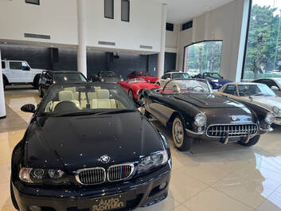
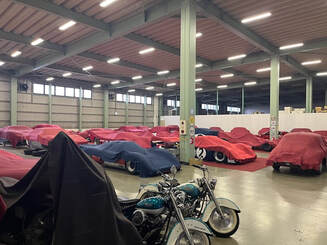
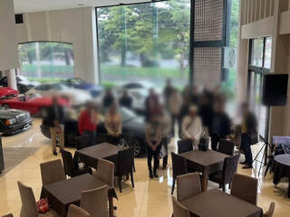

群馬県大泉町「Auto Roman」
邑楽郡大泉町のＡｕｔｏ Ｒｏｍａｎまで訪問。当日は雨のため３２８での参加は見学ツアーに変更。メンバーＭ氏の協力により再度訪問が実現しました。ショールームには希少車両や９０年代国産車のコンディション良好な車両が展示されており、メンバー一同大興奮でした。昼食後、「日本一の秘密のガレージ」に案内され、カバーを外して色々拝見しました。参加１６台、２０名。


